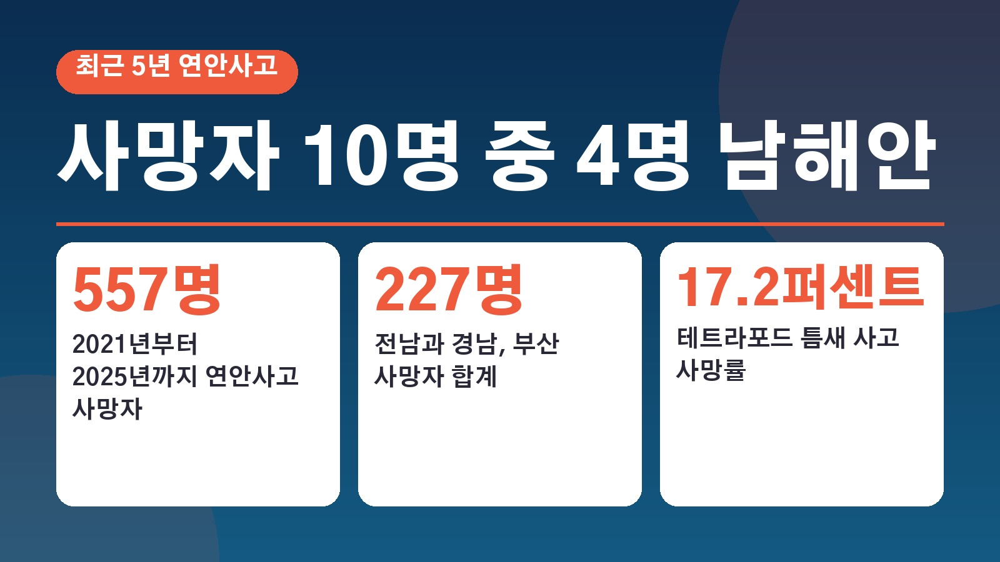
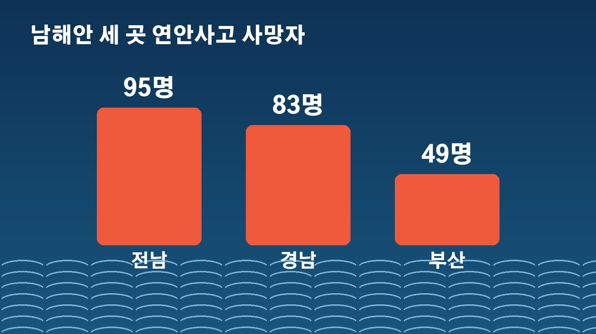
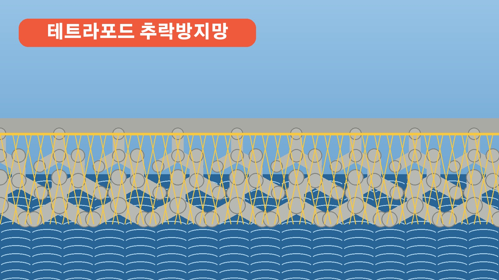

연안사고 사망 557명 중 227명이 전남 경남 부산, 테트라포드 틈새 추락은 사망률 17.2퍼센트

가을 낚시철이라 주말마다 방파제나 갯바위로 나가는 분들 많으시죠. 그런데 바닷가에서 일어나는 사고로 숨진 사람이 최근 5년 동안 557명이었고, 그중 열 명에 네 명꼴이 남해안에서 나왔다는 자료가 나왔어요. 어디서 사고가 잦았는지, 왜 사고는 줄었는데 사망 비율은 올랐는지, 갯바위에서 걸리면 과태료가 얼마인지까지 한 번에 정리해 볼게요.
5년간 연안사고 3104건, 557명이 숨졌다
국회 농림축산식품해양수산위원회 이개호 의원이 해양경찰청에서 받은 자료를 분석해 18일 공개했어요. 2021년부터 2025년까지 5년 동안 전국에서 연안사고는 3104건 일어났고, 이 사고로 557명이 목숨을 잃었습니다.
왜 남해안에 사망자가 몰렸을까
지역별 사망자는 전남이 95명으로 전국에서 가장 많았어요. 경남 83명, 부산 49명이 뒤를 이었고, 이 남해안 세 곳을 합치면 227명으로 전체 사망자의 40.7퍼센트를 차지합니다.
남해안은 해안선이 복잡하게 들고 나는 리아스식 해안이라 작은 항구와 포구, 방파제, 갯바위 낚시 지점이 촘촘하게 몰려 있어요. 사람이 찾는 물가가 많은 만큼 사고 위험도 컸다는 분석입니다.

사고는 줄었는데 사망 비율은 올랐다
반가운 숫자도 있어요. 전국 연안사고 건수는 2021년 717건에서 2025년 568건으로 20.8퍼센트 줄었습니다. 그런데 사고 건수에 견준 사망자 비율은 같은 기간 15.2퍼센트에서 19.4퍼센트로 오히려 높아졌어요. 사고 자체는 줄었지만 한 번 나면 목숨을 잃는 경우가 늘었다는 뜻이라 가볍게 넘기기 어려운 대목입니다.
장소별로 보면 사망자는 해안가 155명, 항구와 포구 140명이 가장 많았어요. 사망률은 해수욕장이 34.8퍼센트, 바다 위가 25.5퍼센트로 특히 높았고요. 방파제에 쌓아 둔 콘크리트 구조물인 테트라포드는 틈새로 떨어지면 머리를 다치거나 물에 빠지기 쉬워 사망률이 17.2퍼센트에 달했습니다.
갯바위 낚시 갈 때 알아 둘 과태료
가을 낚시철에는 갯바위를 찾는 사람이 많은 만큼 불법 행위도 늘어요. 최근 3년간 해상 국립공원에서 갯바위 불법 행위로 적발된 건수는 260건 가까이 됩니다. 출입 금지 구역에 들어간 경우가 55퍼센트로 가장 많았고, 취사가 21퍼센트, 그다음이 오물 투기였어요.
국립공원에서 출입 금지 구역에 들어가면 과태료 20만 원, 취사와 오물 투기는 각각 10만 원이 부과됩니다. 특히 낚싯대를 꽂으려고 갯바위에 드릴로 구멍을 뚫으면 형사처벌까지 받을 수 있어요. 모든 갯바위 낚시가 불법은 아니지만 허용된 구역에서 해야 하고, 갯바위에서는 미끄러지거나 파도에 휩쓸릴 위험이 있으니 구명조끼를 꼭 입고 기상 상황을 미리 확인하라는 게 현장의 당부입니다.

표지판 대신 추락방지망, 여수 사례
이 의원은 지금의 대책이 위험 표지판과 출입 통제처럼 이용객이 스스로 조심하기를 기대하는 방식에 머물러 있다고 지적했어요. 출입 금지 구역을 정해도 사람들이 관리가 허술한 다른 곳으로 옮겨 갈 수 있으니, 사고를 직접 막는 시설이 필요하다는 주장입니다.
대안으로 든 곳이 여수 신항 오동도예요. 이 의원에 따르면 이곳은 테트라포드에 추락방지망을 설치한 뒤로 추락사고가 일어나지 않았다고 합니다. 그래서 전남과 경남, 부산의 위험한 항구와 포구, 테트라포드가 몰린 곳, 갯바위 낚시 지점부터 추락방지망과 차단 펜스를 늘리고 전국으로 넓히자고 제안했어요. 항구와 포구마다 전담 인력을 두고 정기 점검과 비상 대응 매뉴얼을 갖추자는 주문도 함께 내놨습니다.
정리하면 최근 5년 연안사고 사망자 557명 가운데 227명이 전남과 경남, 부산에서 나왔고, 사고 건수는 줄었지만 사고당 사망 비율은 높아졌다는 이야기예요. 갯바위 낚시는 허용된 구역에서만 해야 하고, 국립공원 출입 금지 구역에 들어가면 과태료 20만 원이라는 점도 함께 기억해 두세요.
참고한 기사: 연합뉴스 이개호, 연안사고 사망자 10명 중 4명 남해안 집중, 대책 필요(2026.10.18), 뉴시스 이개호, 전남 연안사고 사망자 5년간 95명, 전국 최다(2026.10.18), 문화일보 연안 사고 사망자 남해안 집중, 전남이 최다(2026.10.18), KBS 낚시하려고 드릴로 구멍, 갯바위 몸살(2026.10.18)
태그
연안사고 남해안 테트라포드 방파제추락 갯바위낚시 낚시과태료 해양경찰청 추락방지망 가을낚시 구명조끼